SAFARI
Users
- General & History
- Types of Wheat
- Wheat Structure
- Wheat Products
- Wheat Flours - including European equivalent flour grade numbering.
- Health & Nutrition
General & History
The Triticum genus is genetically complex and include hybridization with genus Aegilops (goat grass). Much of this hybridization occurred naturally in pre-agricultural times, but the hybridization that produced today's common wheat happened naturally - in farmer's fields.
This complexity helped early farmers select varieties suitable as domesticated crops. Wild grains tend to ripen unevenly and "shatter", meaning they drop seeds from the head as they ripen. Domesticated versions need to have larger seeds and the heads must hold together until all the seeds are all ripe so they can be harvested efficiently. The modern Common Wheat and Durum Wheat are also "free threshing", meaning they come out of their husks with little effort.
Information on storage life and storage methods for all these grains in their various forms can be found on our page Grain, Seed & Flour Storage
Types of Wheat
Common Wheat:
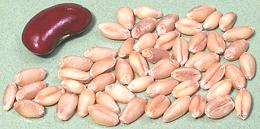 [Bread Wheat, Triticum aestivum]
This is the wheat most grown today, a free threshing wheat with greater
cold hardiness than most wheats. It developed naturally in farmer's
fields, was selected out and is now cultivated in temperate regions
worldwide. Like spelt, to which it is closely related, it is hybridized
with Goat Grass (Aegilops cylindrica alt Aegilops
tauschii). Several varieties have been selected as major crops in
North America.
Hard Red Spring Wheat:
[strong wheat (GB)] Used to make high protein (high gluten) flour for bread and other firm baked goods that need a lot of elasticity for good rising.Hard Red Winter Wheat:
Another high protein bread wheat. It is often blended with lower gluten wheats to produce All Purpose flour.Soft Red Winter Wheat:
A low protein wheat used to make pastry flour suitable for cakes, pie crusts, muffins and other baked goods where tenderness is a prime concern.Hard White Wheat:
A medium protein wheat used for bread and brewing.Soft White Wheat:
A low protein wheat used to make pastry flour suitable for cakes, pie crusts, pastries and the like where tenderness is a prime concern.
Durum Wheat:
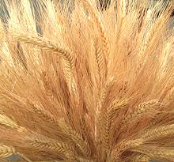 [Pasta Wheat, Semolina, Triticum durum]
This is a very hard, high protein (but moderate gluten) wheat particularly used for making pasta. This wheat was developed by artificial selection from domesticated Emmer Wheat. It's origin is thought to be Egypt or Ethiopia, and it spread through the Magreb and Middle East. It was brought to Europe by the Islamic invasions of Spain, Southeast Europe and Sicily.
This wheat is used for all high quality dried pasta, including the
couscous of North Africa and the Levant. The moderate gluten level
makes possible extruding it into various shapes. It is also used in Italy
to make pizza bread and in North Africa to make flat breads, but the
biggest use is to make bulgur (parboiled wheat). The Middle East and
North Africa are the largest producers, followed by North America and
Western Europe.
Spelt:
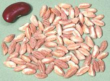 [Triticum spelta]
This grain is a hybrid of a domesticated Emmer (Triticum dicoccum) and Goat Grass (Aegilops cylindrica alt Aegilops tauschii), a common weed in wheat fields. This probably happened in Anatolia and the Caucasus where goat grass is native and the earliest evidence is found (around 4000 BCE). It may have happened again in central Europe around 2000 BCE, but as a hybrid of emmer and common wheat.
Spelt is mentioned in translations of Jewish, Greek and Latin texts, but it did not grow in those regions and the translation should have been to Emmer.
Spelt was an important crop in Europe from the Bronze Age to medieval
times and was introduced into North America but has been almost totally
displaced by Common Wheat. It has recently found new markets. One is for
use by people with a wheat allergy (but it's not suitable for celiacs).
It has the most desirable qualities for the "health food" market, being
exotic and expensive. It has also been adopted by the organic farming
movement because it requires less fertilizers than regular wheat. It has
hard husks so it's much more difficult to thresh than common or durum
wheats.
Adjar:
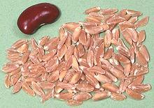 [ՙԱՃԱՐ or ՙԱճար, Adjar (Armenia); Zanduri (Georgia); Parinj (Iran); Triticum timopheevii | wild Triticum araraticum]
The wild version of this grain grows all through the Southern Caucasus
and from southeastern Turkey through northern Iraq to northwest Iran.
The domesticated form is grown mostly in Georgia. It is used in Georgia,
Armenia and parts of Iran to make pilafs, for which it is highly regarded,
and is also ground into flour to make bread. Adjar is pretty easy to find
in the ethnic markets here in Los Angeles, particularly around Glendale
(the Western capital of Armenia), but may be hard to find in other
regions. The best substitute is probably
Spelt, though not exact.
Emmer / Farro:
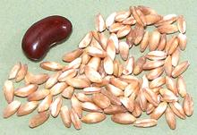 [Farro (Italy); Triticum dicoccum]
This grain was first domesticated in the southeastern region of Anatolia about 9500 BCE. Wild emmer was presumed extinct, but a remanent population was found in Israel in 1906. Emmer was a widely grown crop throughout the Near East and North Africa. Emmer and Barley were the main ingredients in bread and beer in ancient Egypt. The photo specimens were "pearled" Farro from Italy. In other words, the fibrous outer layer has been milled off.
Today Emmer is grown mainly in mountainous areas of southern Europe and North Africa where it gives better yield in poor soil than other wheat crops and has better disease resistance. Emmer, as Farro, is most popular in Italy and grown as a certified crop in Tuscany. It is widely sold in Europe as a "health food" because it is sufficiently expensive for that market, but due to demand, spelt is being grown in non-certified regions and deceptively sold as Farro.
Emmer is baked into bread in Italy and Switzerland and in Tuscany is
used as whole grains in soup. Today it is being made into pasta for the
"health food" market, but many consider the texture of emmer pasta
inferior. Emmer has a higher fiber content than regular wheat. It has
hard husks so is much more difficult to thresh than common or durum
wheats.
Einkorn:
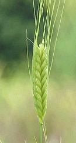 [Triticum monococcum]
This grain was first domesticated in southeastern Anatolia around 7000
BCE. It differs from the wild variety (Triticum boeoticum) in
that the seeds are larger and the heads do not "shatter". It was already
in decline by the Bronze Age and today is planted only in mountainous
regions around the Mediterranean basin where it survives well in poor
soil. It is often made into bulgur (parboiled and cracked wheat) in
those regions. It has hard husks so is much more difficult to thresh
than common or durum wheats.
Photo by Kurt Stueber distributed under license
Creative Commons
Attribution-Share Alike 3.0 Unported.
Khorasan Wheat / KAMUT
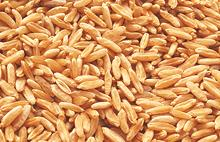
[Triticum turanicum alt Triticum turgidum ssp turanicum]
A relatively low yield wheat producing very large kernels, probably
originating in northern Mesopotamia (stories of it coming from an
Egyptian tomb are highly unlikely). It is a "heritage" variety some of
which has been grown in Egypt but is mostly found in small plots in
southeastern Turkey. Some people with a wheat allergy can eat this grain,
but not celiacs. KAMUT is a registered trademark designed to control
the characteristics of the type and is not a generic term for this type
of grain.
Photo by Kamutinternational contributed to the public domain.
Wheat Structure
| 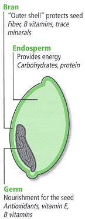 |
|
Wheat Products
Whole Wheat:
[Wheat Berries (popular)]
This is the whole wheat kernel with only the husk removed. It has very
good storage properties (25 years and more) so long as it is not damaged,
but vitamins will be depleted in 3 years and gone in 5. This form has
the greatest amount of nutrients but it takes a very long time to cook
and it has a distinctive nutty flavor.
Pearled Wheat:
This is wheat with the outer bran layer removed by an abrasive process. It is increasingly used to prepare wheat for roller milling into flour rather than removal by the first roller stage which is not as precisely controllable. It is not generally sold as a retail product (see Pelted Wheat).
Pelted Wheat:
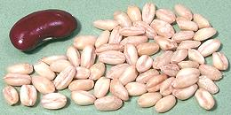 [Dzedzadz (Armenia); Jareesh, Jerrish, Gerish, Gerrish, (Arabic - crushed); Ceris (Turk); Hurled Wheat]
This is used particularly in Turkish, Armenian, Middle Eastern and Persian
cuisines, so is quite available here in Los Angeles. The whole wheat
grains have been lightly pearled (the outer bran layer removed by
abrasion) and polished. The germ is still present but has been damaged
to the point it is not viable. It cooks more quickly than whole wheat
and has a less assertive flavor. Some of the fiber has been removed and
its keeping properties are less than for whole grain because the germ
will be slightly damaged. This product is also available crushed under
various spelling of "Jareesh", used particularly in the Arabian
peninsula in a dish called "Jareesh".
Cracked Wheat:
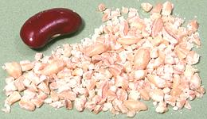 [Gorgot, Gorgod (Armenia); Yarma (Turkey); Daliya (India)]
Whole wheat or pelted wheat kernels crushed (I have also found packages
of whole pelted wheat labeled Gorgot). This product will cook much
faster than whole wheat, but it is much more perishable due to damage to
the wheat germ. Keeping properties will be similar to Bulgur. It is not
equivalent to Bulgur, though they are often confused - Cracked Wheat takes
a lot longer to cook. It is sold in fine, medium and coarse grades. The
photo specimen of very coarsely crushed pelted wheat and was labeled
"Yarma".
Bulgur:
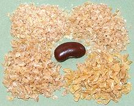 [Bulghur, Burghul, Arisah]
Whole wheat kernels are soaked, then boiled or steamed and dried.
When dry, the hulls and some of the bran are removed (as little as 5%) after
which they are crushed and sorted to various mesh sizes. This form cooks much
faster than cracked wheat and can be used uncooked (just soak well). As with
parboiled rice, some of the bran nutrients are driven deeper into the berry
for better nutrition. Bulgur is much used in the cuisines of southeastern
Europe, Anatolia, the Caucasus, the Middle East, Central Asia, North Africa,
ancient Rome and the Levant, Bulgur is sold in numbered grades depending on
coarseness. The photo shows #1 and #2 on the top row and #3 and #4 on
the bottom. Grade #5 is not easy to find.
Details and Cooking.
- #1 - fine - often mixed with ground lamb to make kibbe.
- #2 - medium - used for tabouli
- #3 - coarse - used for pilafs, casseroles, baked dishes.
- #4 - half cut - used for pilafs - not as common as finer grades.
- #5 - very coarsely crushed - almost whole grain.
Freekeh
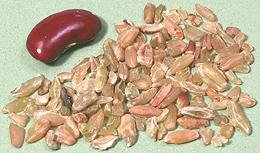 [Farik; Firik (Turk); Triticum turgidum var. durum]
Green (unripe) wheat that has been fire roasted and cracked, it's quite
a bit more expensive than Bulgur. This form is used mainly in the Levant,
Egypt, and across North Africa, but is now widely available in Turkey
due to influx of Syrian refugees. It has also recently been discovered
by North American health food enthusiasts. The samples we have used were
exported from Syria and Jordan.
Details and Cooking.
Wheat Flakes
Wheat is soaked and steamed, then flattened between rollers to make flakes. These can be used to make a hot breakfast cereal similar to rolled oats. The flakes can be further processed to make them usable as cold breakfast cereals, for example, Wheaties® .
Wheat Bran:
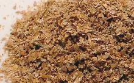 This is the outer layer of the wheat kernel, removed before milling into white flour. It is used mainly to add dietary fiber to products deficient in fiber or to make a "high fiber" claim on the box. It contains minerals and, if fresh, vitamins. Photo by Ali distributed under license Creative Commons Attribution-ShareAlike v2.5 Generic.
Wheat Germ:
This is the living part of the wheat kernel. Because it is highly perishable it is removed from the grain in making white flour. Because it is high in vitamins and oils it is in high demand, and the salvaged germ can often be sold for more than the flour.
Wheat Germ Oil:
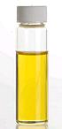
This oil contains the highest concentration of vitamin E of any plant
source. It also contains long string fatty alcohols, suspected of being
able to lower blood cholesterol, and other substances of nutritional
interest. It is not used as a cooking oil because of its strong taste
and high price.
Photo by Itineranttrader contributed to the Public Domain
.
Wheat Gluten
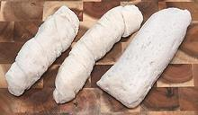 [Seitan (Japan, MK Macrobiotics); Miàn jin (Chinese); milgogi (Korea)]
Wheat gluten is a very important food in China for strictly vegetarian
Buddhists, and in North America for vegetarian "meat analog" products
like Tofurky®. It is available in a number of forms.
Details and Cooking.
Wheat Flours:
The largest portion of the wheat crop is ground very fine into flour for making bread and a vast number of other applications. See our page Grain, Seed & Flour Storage for storage methods and recommended storage times.
Whole Wheat Flour
[Whole Meal Flour (UK)] Wheat ground to flour without removing the germ or bran coating, it can be made from any kind of wheat but is usually an "all purpose" flour or "bread flour". It contains more nutrients than white flour but it has to be used quickly because the oils in the wheat germ turn rancid and bitter in about 3 months. For better rising breads it is often mixed with White Flour.Graham Flour
A courser grind of Whole Wheat flour, promoted by Sylvester Graham in the 1830s and used to make Graham Crackers and pie crusts.White Flour:
Flour ground from wheat that has been milled to remove the bran coating and germ. It is commonly bleached to improve whiteness. Because most of the germ oils have been removed (along with vitamin E and other nutrients) it does not go rancid as quickly as Whole Wheat flour.All-Purpose Flour:
[Plain Flour (UK)] A medium gluten flour that can be used for most purposes but is ideal for few. Bleached and unbleached versions are available. Bleached has less protein and should be used for cookies, quick breads, pie crusts, pancakes and waffles. Unbleached is better for yeast breads, puff pastry, strudel, Danish pastries, éclairs, cream puffs, popovers and Yorkshire pudding.Bread Flour:
Made from hard wheat with high gluten content (or a softer wheat fortified with Gluten Flour), this flour is generally unbleached and sometimes treated with ascorbic acid (vitamin C). It produces elastic dough that rises well with strong bubble walls and is the best flour for all yeast rising products.Pastry Flour
Made from soft wheat but with more gluten than Cake Flour, this flour is used for biscuits, pie crusts, cookies, quick breads and pastries. It is unsuitable for yeast rising products.Cake Flour:
This flour is made from the softest low gluten grades of wheat. It is ground very fine and generally bleached by a method that leaves it slightly acid for better rising. This flour will make very light, tender products even if they contain a lot of sugar. If you have to use all-purpose flour instead, subtract 2 T per cup of cake flour called for in the recipe.Gluten Flour:
Pure wheat gluten with all other components removed. Used mainly as an additive to increase gluten in other flours.Self Rising Flour:
[Pancake Flour] an "all purpose" flour with baking powder and salt added (typically 1 cup flour, 1-1/2 t baking powder + 1/2 t salt). It is used for biscuits, pancakes and the like.Instant Flour:
This product is a granular formula designed to dissolve quickly in hot or cold liquids. It is used mainly for making sauces.Farina:
A fine ground wheat but coarser than flour. It is made from soft wheat but is commonly unbleached, though brand name versions like Cream of Wheat are bleached.Durum Semolina:
Hard Durum wheat ground a little coarser than regular flour. Its most important use is to make high quality pasta, but it is also used to make puddings and in many other ways. It is used to make bread in some parts of Italy and North Africa, but it has less gluten than hard bread flour.Semolina Meal:
Hard Durum wheat ground a little coarser than Semolina Flour. It is often used to make cooked cereals like farina.Spelt Flour:
Often used by people with a wheat allergy (but not celiacs), this flour comes in Whole Wheat and White varieties. It doesn't rise as well as wheat flour so it's not easy to make it into a light yeast rising bread. It is more soluble in water than wheat flour so when substituting for wheat use about 3/4 the amount of water. Its gluten is fragile so it can't take a lot of kneading.Teff Flour:
This is not a Wheat flour. Wheat and its close relatives are in subfamily Pooideae, while Teff is in the more drought resistant subfamily Chloridoideae. This flour is needed to make the authentic injera sourdough flatbread used in Ethiopia (traditionally made so large it's used as an edible tablecloth). It is always whole grain and varies in color and flavor. Currently, in North America, it can be found in some health food stores, on-line, and in Ethiopian markets. For details see our Teff page.
European Flour Numbers:
The equivalences are not precise due to different standards for testing.
| Protein | German | French | Italy | US |
|---|---|---|---|---|
| ~9% | 405 | T45 | 00 | Cake / Pastry Flour |
| ~10% | 550 | T55 | 0 | All-Purpose Flour |
| ~11% | 650 | T65 | Light Bread Flour | |
| ~12% | 812 | T80 | 1 | Bread Flour |
| ~14% | 1050 | 2 | High Gluten Bread Flour | |
| T110 | Light Whole Wheat Flour | |||
| 1150 | Medium / Dark Rye Flour | |||
| 1600 | T150 | Integrale | Whole Wheat Flour |
Health & Nutrition
Disclaimer:
I am not a medical or diet practitioner of any kind, and don't claim to be one at parties or even on dates. What is written here is informational, gleaned from publicly available material, and can not be considered medical advice. On the other hand, I have no financial incentive to bias my take on the subject.Protein:
Wheat is high in protein, but its protein profile, like the protein profile of other grains, is incomplete for human nutrition. Vegetarians must complimented grains with beans, which are protein deficient in the opposite direction. Persons with a diet rich in meats are getting an excess of protein, so this deficiency is irrelevant to them.Typically, for 100 grams of hard red winter wheat, 12.6 grams is protein, 1.5 grams is fat, 71 grams is carbohydrates (mostly starch) and 12.2 grams is dietary fiber. Wheat is fairly high in iron, around 3.5 milligrams per 100 grams depending on variety.
Gluten Intolerance:
Roughly 1 in 133 people of Indo-European descent have an intolerance to gluten, a protein in wheat, barley, rye and some other grass seeds. This is an autoimmune disorder of the small intestine and is of genetic origin. Called "celiac disease" in North America and "coeliac disease" in Europe and elsewhere, it is currently under-diagnosed in North America and often misdiagnosed as "irritable bowel syndrome". It is a debilitating and degenerative condition which must be taken seriously.There is no cure for Gluten Intolerance. A person with this condition must follow a strictly gluten-free diet, including avoidance of all products with even traces of wheat, barley, rye and other gluten bearing grains. Rice and Corn are gluten free grains that can be used as alternatives.
Gluten Sensitivity:
Some people are sensitive to gluten, suffering similar digestive problems, but come up negative for celiac disease and have no evidence of digestive tract degradation. This condition is poorly understood and people vary greatly in sensitivity. There is currently no reliable diagnostic.Persons who suffer from these digestive problems are recommended to try a gluten free diet for a few weeks. If they improve markedly they should consider a gluten free diet.
Allergies:
Some people who are not celiacs are allergic to wheat proteins and must avoid wheat and other gluten containing grains. This condition is discomforting, but not as dangerous as celiac disease.Gluten Free Diet:
a "celiac clean" diet takes a great deal of attention to every bit of food eaten, and close attention to intake of vitamins and minerals, fiber and other nutrients which can easily be deficient in such a diet.Many health industry practitioners are now strongly promoting a gluten free diet for everyone (and many of them are selling products related to that). Actual nutritional scientists generally recommend not going on such a diet if there is not a clear reason to do so, because it makes proper nutrition more difficult and more expensive.
There is a current fad to go "gluten free" for rapid weight loss. Experts say this is hokum, the only way such a diet will cause weight loss is if your diet is now so unappetizing you don't want to eat. Hardly a good trade off. Many gluten free products are more fattening than their gluten containing equivalents, and poorer in vitamins and minerals.